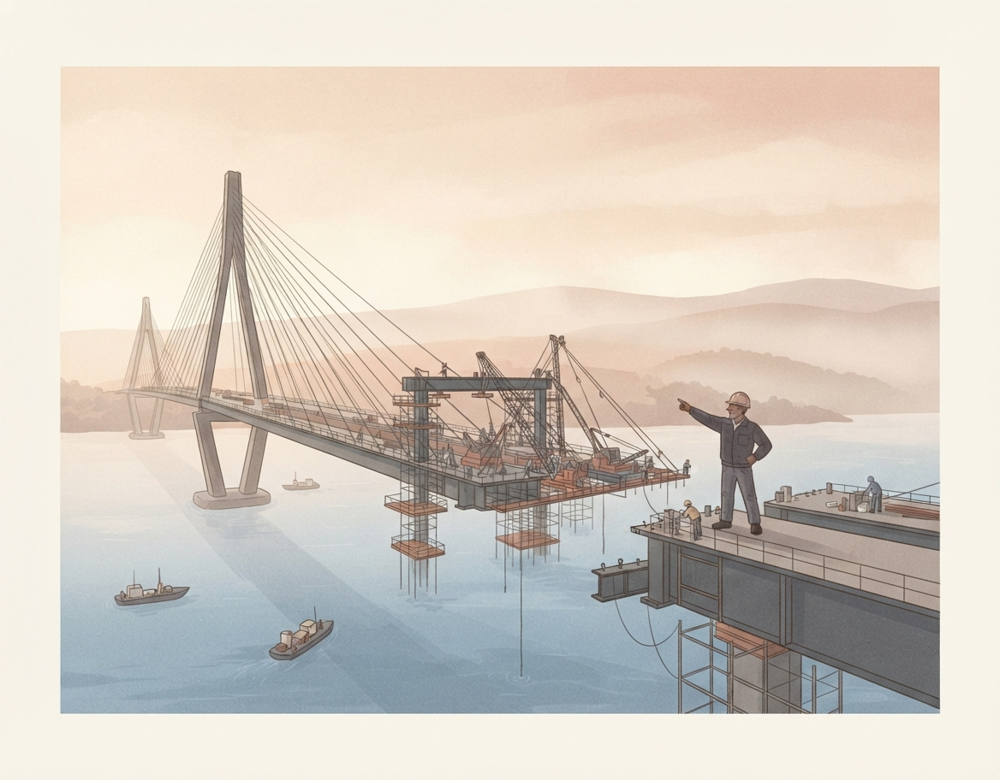

Government & Public Sector
Nonprofits & Community Organizations
Healthcare
Education
Strategic Planning
Strategic Planning
Assess where you are, and chart where you're going.
- Current-state assessment & stakeholder interviews
- Organizational assessment
- Executive & board-level vision setting

Building Capability
Building Capability
Build the ability to get there.
Building Capacity
- Leadership development & executive coaching
- Six Sigma training & certification
- Skill-building workshops
Building Capacity
Build the platform to cross it.
Sustaining the Change
- Kaizen events & tabletop exercises
- Workshop facilitation
- Operational efficiency implementation
Sustaining the Change
Drive continuous success, and get the most from the change.
- Change management support
- Organizational alignment
- Succession planning & team engagement